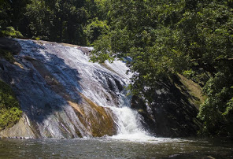
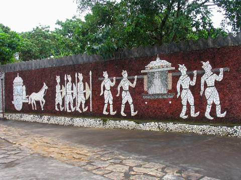

Malampuzha Dam
Malampuzha Dam is the largest dam and reservoir in Kerala, located near Palakkad, in the state of Kerala in South India, built post independence by the then Madras state

Palakkad Fort
Palakkad Fort is an old fort situated in the heart of Palakkad town of Kerala state, southern India. It was recaptured and rebuilt grandly by Sultan Hyder Ali in 1766 ACE and remains one of the best preserved forts in Kerala.

Dhoni Waterfalls
Dhoni is situated around 15 Kilometers from Palakkad town in Kerala, India. Dhoni is named after a boat shaped rock on one of its hill, as boat in Malayalam is called "thoni".

Rock Garden
Large garden with artful rock structures.Expansive garden area featuring sculptures & ornate walls with rock mosaics amid grassy surrounds.